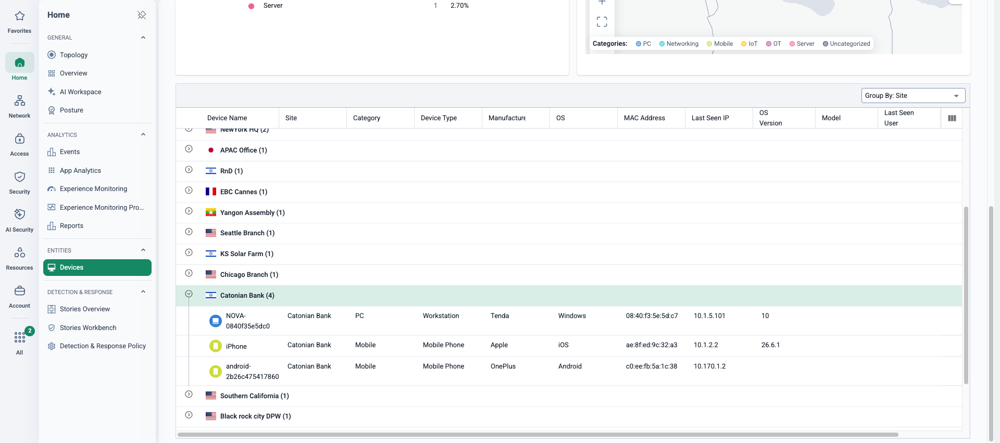
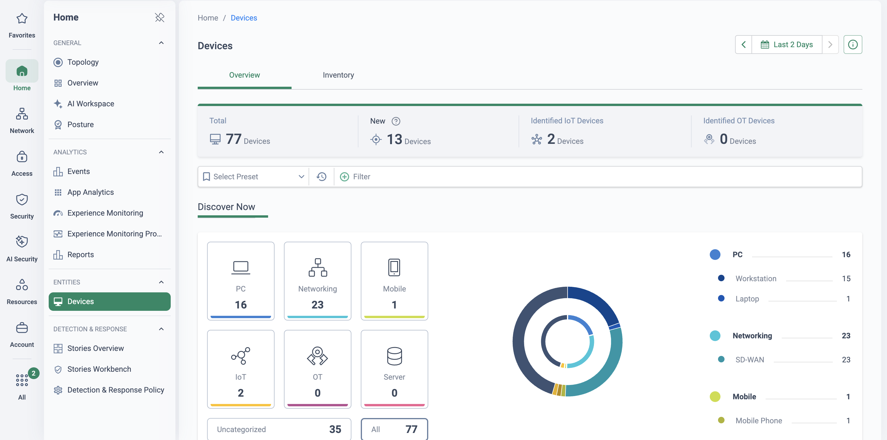

Why this matters
Every security control an organisation owns assumes it knows what is on the network. That assumption breaks the moment you count the devices that can never run an endpoint agent — operational technology, IoT, medical and building-management kit, printers, cameras, badge readers, and the BYOD devices staff plug in without asking. They have no EDR, no client, and no place in the CMDB, yet they are already talking to your servers and the internet.
The objective of this use case is the first, unglamorous half of every OT/IoT and zero-trust story: build one live, accurate inventory of everything on the network — including the things nobody installed on purpose. Cato does it with the IoT/OT Security licence, which uses the Socket already at each site as a passive discovery sensor. This is the visibility story; its enforcement sibling — Manufacturing OT/IoT Device Security — is where the same classified devices become segmentation and firewall rules. Once you can see them, you can segment them.
Why the unmanaged estate stays invisible
The shadow-device problem
Agentless devices — a camera added by a contractor, a sensor that arrived with a machine, a personal laptop on the guest VLAN — join the network silently. There is nothing to install a client on, so they never appear in any agent-based tool. They are the exact assets attackers look for first.
The stale spreadsheet / CMDB
Most inventories are a spreadsheet or a CMDB that was accurate on the day it was compiled and has drifted ever since. It records what was procured, not what is connected — and it says nothing about a device's category, model or firmware, which is precisely what a policy needs.
Active scanning is a risk to OT
The classic answer — an active network scanner that probes every host — is dangerous on fragile kit. As general practice, OT and medical teams restrict or forbid active scans because unexpected probes can hang or crash a PLC, a controller or a clinical device. Visibility must not become an outage.
No single source of truth
Even where discovery tools exist, they sit per-site or per-domain: one for IT, another bolted onto the OT network, nothing for the branches. There is no single, cross-site view that answers "what is on our network, everywhere?" in one place.
"If I asked you to produce a complete list of every device on your network right now — across every site, including the OT, IoT and BYOD kit that has never run an agent — how long would it take, and how confident would you be that it is correct?"
Where this sits in the Cato SASE platform
- PLCs, cameras, printers, medical devices and BYOD kit sit behind the Socket; none can run an agent.
- Each device is fingerprinted passively from its own traffic: category, type, model, OS, manufacturer.
- One live Device Inventory in the CMA spans every site; identification can take up to 12 hours.
- The same attributes become device-attribute firewall rules, or sync to a CMDB via the GraphQL API.
Passive discovery at the Socket — no agents, no scans
With the IoT/OT Security licence enabled, Device Inventory uses a passive method of detection with no special setup or agents required. The engine analyses WAN-bound and outbound traffic as it already flows through the Socket, and from that traffic it detects, identifies and classifies every connected device. Nothing is injected onto the network, nothing probes the endpoints, and the fragile OT and medical devices that active scanners can knock over are never touched — they are simply observed.
Each device is resolved into a set of attributes — category, type, model, OS and OS version, manufacturer, device name, MAC address and IP — and lands in one inventory that spans every site behind a Socket. Those same attributes are what firewall rules match on, so discovery and enforcement share one vocabulary: the device you see on the inventory page is the device a rule can target.
Why this beats the alternatives
Discovery with no footprint
The Socket is already in the traffic path. Detection is passive — no agents to deploy, no scanners to license, and no probe traffic that could disturb a production line or a clinical device.
Classified, not just counted
Each device is fingerprinted into category, type, model, OS, OS version and manufacturer — the attributes a rule can act on — rather than reduced to a bare IP or MAC on a list.
One inventory, every site
Because discovery happens at every Socket and rolls up in the CMA, the inventory is a single cross-site source of truth — HQ lab, Bristol Office, a hospital wing and a manufacturing plant in one view.
Discovery feeds enforcement
The classification is the same object the firewall consumes. A device the inventory identifies as a Siemens PLC is immediately a candidate for a device-attribute rule — no re-keying between tools.
Because identification is behaviour-based, it can take up to 12 hours to complete for a newly seen device, and an occasional field can be classified incorrectly. Treat the inventory as a living picture that sharpens over time: review it before you build enforcement on it — which is exactly the monitor-first discipline the enforcement pages already preach.
The attributes — and what each one unlocks
Device Inventory resolves each device into nine attributes. Five of them — Category, Type, Model, OS and Manufacturer (with OS version) — are directly usable as firewall rule criteria across WAN, Internet and LAN policy; the rest are identification and correlation data that make an event or a device unambiguous.
| Attribute | What Cato captures | What it unlocks |
|---|---|---|
| Category | The broad class — e.g. IT, IoT, OT, Mobile, Server | Top-level policy scope; drives the dashboard's identified-IoT and identified-OT counts |
| Type | The device role — e.g. PLC, IP camera, printer, mobile phone, network appliance, workstation | Type-based rules and device groups ("every IP camera", "every PLC") |
| Model | The specific product model | Precision targeting — narrow a rule to one controller or camera model |
| Manufacturer | The vendor that made the device | Vendor-based allow/deny — e.g. keep one networking brand off the internet |
| OS & OS version | Operating system and version where identifiable | Firmware-/OS-aware scoping; spot devices on out-of-date software |
| Device name | A human-readable name for the device | Readable identification in the inventory and in events |
| MAC address | The hardware address | Stable identity that does not move when DHCP reassigns an IP |
| Device IP | The current network address | Where the device sits now; ties inventory to live events and flows |
The data surfaces in two places in the CMA. The Device Inventory page is the filterable, per-device list — group by Site, Manufacturer, Type and more, and click any device for a Quick View of its details and the events and apps it generates. The Device Dashboard is the roll-up: a summary bar of total device connections, newly seen devices, and identified IoT and OT counts, with "Discover Now" breakdowns by type and model, OS and manufacturer, and Security widgets showing IPS and firewall events by device category and type. A Segmentation Flows Sankey visualises the protocols and destinations devices actually use — the evidence you turn into the right segmentation rules.
Once you can see them, segment them
Discovery is only valuable if it changes what the network does. Because a discovered device is already described in the same attribute vocabulary the firewall speaks, turning inventory into control is a short step: a device (or a whole category or type) becomes a device-attribute object that a rule matches on, and the rule then follows the device wherever it appears — now or in the future — regardless of its IP.
That enforcement is the subject of the sibling page, Manufacturing OT/IoT Device Security, which already shows a live device-attribute rulebase and Purdue-model segmentation on the Socket's LAN firewall (a global policy under Security → LAN Firewall, scoped per site and VLAN and enforced on the Socket). This page deliberately stops at the inventory; that page picks it up and segments it. The join between them is one object:
This page — see
Passive discovery classifies the estate into one inventory: category, type, model, OS, manufacturer. You now know what is connected.
The sibling page — segment
Those same attributes become device groups and LAN/WAN/Internet firewall rules, enforcing least-privilege between Purdue levels and to the internet.
The inventory is also enriched, not just built, in isolation. Device Management connectors merge metadata from third-party platforms — Microsoft Intune and Defender, CrowdStrike, Armis, Claroty, Juniper Mist and Zoom — with Cato's passive discovery to create unified device profiles, giving managed and unmanaged assets one coherent record. These connectors require the IoT/OT Security licence (plus the relevant third-party entitlement).
How to run the demo
Ask how they inventory devices today, when it was last accurate, and whether it covers OT, IoT and BYOD. Ask whether they are allowed to run active scans on their OT or clinical networks. Their answers are the gap you fill in the next five minutes.
-
Open the inventory — the visibility they lack
Assets → Device Inventory
Show the live list of devices Cato has discovered and classified passively from traffic — no agents, no scanners. Walk the attribute columns: category, type, model, OS, manufacturer. "This built itself from the Socket that is already in place."
-
Filter and group by what matters
Assets → Device Inventory
Group by Manufacturer, Type or Site to answer real questions in one click — "show me every IP camera", "every device from vendor X", "everything at the manufacturing plant". This is the single cross-site source of truth the four discovery-question answers were missing.
-
Drill into one device
Assets → Device Inventory
Click a device to open its Quick View: the full attribute set plus the events it has generated and the apps it is reaching. Pick something evocative — a printer talking to the internet, a camera on old firmware — to make the risk concrete.
-
Read the dashboard roll-up
Assets → Device Inventory
Switch to the Device Dashboard: total device connections, newly seen devices, and identified IoT and OT counts, with breakdowns by type, model, OS and manufacturer, and the Segmentation Flows Sankey of protocols and destinations. Executive-friendly, one screen.
-
Turn a discovered device into a policy object
Security → LAN Firewall
Take a device you just found and build a rule around its attributes — e.g. Type = IP camera, Manufacturer = X — set to Allow · Event first. This is the pivot from seeing to segmenting; the full enforcement story lives in Manufacturing OT/IoT Device Security.
-
Show the export / API path for CMDB sync
Administration → API & Integrations
Close on integration: the inventory is available programmatically via the Cato GraphQL API, so the CMDB can be kept current from the network's own ground truth rather than by hand — the automation angle is covered in Automation at Scale with API, catocli & Terraform. Device Management connectors bring third-party context the other way to enrich the same records.
How to prove it in the customer's tenant
The demo shows a populated inventory in our tenant; the PoV is an inventory-truth pilot in theirs. Pick one site, let passive discovery run for an agreed window, then put what the network actually reports next to what the customer believes is connected — the CMDB or spreadsheet number. The delta between those two figures, in either direction, is the finding: missing devices mean the record is stale, surplus devices mean things are on the network that nobody booked in. Agree the criteria below before configuring anything, per the frame in Running a Cato PoV — every criterion has a measurement, an evidence artefact and a place in the CMA where it will be read out.
| Success criterion | What we demonstrate | Evidence artefact | Where in the CMA |
|---|---|---|---|
| Inventory populated in the window | Device Inventory for the pilot site fills passively within the agreed discovery window — no agents deployed, no scans run | Dated capture of the inventory grouped by Site, with the device count against the CMDB expectation recorded beside it | Assets → Device Inventory |
| The CMDB delta is quantified | Discovered count vs the customer's written expectation — the delta itself is the deliverable, whichever direction it runs | A two-line table in the evidence doc: expected N, discovered M, delta and its composition | Assets → Device Inventory |
| Classifications spot-verified | A sample of ~10 devices checked against physical reality: make, model, OS and category correct (or honestly logged as partial) | The sample list annotated verified / partial / wrong, from Quick View details | Assets → Device Inventory (Quick View) |
| An unknown device identified (expected outcome) | At least one device nobody expected is found and named — in practice this almost always happens, but it is an expected outcome, not a promise | Quick View capture of the device with its attributes, events and the apps it reaches | Assets → Device Inventory |
| One rule authored from inventory evidence | A LAN Firewall rule built from what discovery found — running in monitor mode (Allow, Track = Event), proving inventory converts to policy | The rule in the rulebase plus its LAN Firewall events for the pilot site | Security → LAN Firewall · Monitor → Events |
| Inventory extract delivered | The classified inventory leaves the console as a document the customer keeps — the artefact their CMDB reconciliation starts from | The dated inventory extract itself, attached to the wrap-up pack | Assets → Device Inventory |
- Licence: the IoT/OT Security licence on the trial account — Cato's KB is explicit that a separate licence is required for the Device Inventory pages and features.
- Scope: one pilot site behind a Socket. Discovery itself needs no setup — it is a passive method with no agents, analysing WAN-bound and outbound traffic as it flows — but every VLAN you want inventoried must route through the Socket.
- The discovery window: identification can take up to 12 hours per newly seen device, so agree a window (week one works) rather than expecting a same-day list.
- MAC visibility: device-attribute firewall rules only apply to devices whose MAC address was detected — Cato recommends using the Cato DHCP service at the pilot site to help ensure MAC detection.
- Socket version: the LAN Firewall is configured under Security → LAN Firewall as a global policy; per the LAN Firewall policy KB, device-attribute criteria in LAN Firewall rules are supported from Socket v26 and higher — check the pilot Socket before writing the rule step into the plan.
- The CMDB number: get the customer's expected device count for the pilot site in writing before discovery starts — the delta criterion is meaningless if the expectation is set after the answer is known.
- Not needed: TLS inspection, client rollout or identity integration — this pilot is deliberately zero-touch, which is part of its sales value.
Configuration walkthrough
-
Record the expectation, then baseline the site
Network → Sites
Write the customer's expected device count (and their device list, if one exists) into the evidence doc, dated. Then confirm the pilot site: Socket up, version noted, all in-scope VLANs defined and routing through the Socket, and — ideally — the Cato DHCP service serving the local segments so MAC addresses are reliably detected. Screenshot the site config as evidence item zero.
-
Start the clock on passive discovery
Assets → Device Inventory
There is nothing to switch on at the site: with the licence active, the engine detects, identifies and classifies devices from the traffic already traversing the Socket. Note the start date, set the page's time-range filter to the PoV window, and let it run. Per the KB, allow up to 12 hours for a newly seen device to complete identification and appear.
-
Count the inventory against the CMDB
Assets → Device Inventory
At the end of the window, group the inventory by Site and read the pilot site's count next to the written expectation. Present the delta neutrally: fewer devices than expected points at stale records or devices that are no longer talking; more devices than expected is the unmanaged estate making itself visible. Either way the customer learns something their current tooling could not tell them — that is the criterion passing.
-
Spot-verify a sample of classifications
Assets → Device Inventory
With the customer, pick ~10 devices they can physically identify and open each Quick View: is the category, type, model, manufacturer and OS right? Log each as verified, partial or wrong. Be upfront about the mechanism: identification is behaviour-based, so the engine only fills the fields it can confidently identify, and an occasional field can be incorrect — a mostly-right inventory that admits its gaps beats a spreadsheet that admits nothing.
-
Hunt the unknown device
Assets → Device Inventory
Sort by newly seen and walk the list with the customer against their records. The device nobody recognises — a contractor's camera, a smart plug, an unbooked laptop — is the moment the PoV usually turns: open its Quick View and show what it is, when it appeared and what it is talking to. Frame it in the criteria as an expected outcome: you cannot promise a surprise, but an estate with zero surprises would itself be remarkable.
-
Author one rule from the evidence — monitor mode
Security → LAN Firewall
Convert one finding into policy. The LAN Firewall is a global policy configured once under Security → LAN Firewall, scoped per site and VLAN in the rule, and enforced locally on the Socket. Build a rule from what discovery found — e.g. the unknown device type, or "IP cameras at the pilot site" — using the Segmentation Flows view to see the protocols and destinations those devices actually use. Set the action to Allow with Track = Event: nothing blocks, but every match lands in Events — the monitor-first discipline that makes the enforcement conversation a data-driven one.
-
Read the rule's events, then deliver the extract
Monitor → Events Assets → Device Inventory
Show the LAN Firewall events the monitor rule generated for the pilot site — inventory evidence became live policy telemetry without touching production traffic. Close by delivering the inventory extract: the classified device list for the pilot site, dated, into the wrap-up pack. For ongoing CMDB sync the same data is reachable programmatically — the automation angle is covered in Automation at Scale with API, catocli & Terraform — but for the PoV the artefact is the extract, not the pipeline.
What good output looks like
Three exhibits carry the wrap-up: the inventory grouped by Site with the count visible (set against the written CMDB expectation), one Quick View of the unexpected device with its events and apps, and the LAN Firewall monitor rule beside its first events. The sibling page, Manufacturing OT/IoT Device Security, shows what the same rulebase looks like once monitor mode graduates to enforcement — device-attribute rules with live hit counts — which is precisely the "phase two" picture to leave on the table.

![CMA Device Quick View drawer for an Android phone: category Mobile, last active about three hours ago, and a Device Info panel listing OS, MAC address, vendor OnePlus Tech (Shenzhen) Ltd, last-seen IP, site, network name, device ID, a first-seen date and Is Managed set to No. Beneath sit destination application and domain chips — tcp, google_play_store plus eleven more, googleapis.com, ntp.org plus nine more — and collapsed Events by Sub Type and Events by Action sections, with a View Events link at the top.](../assets/img/cma-device-quickview.png)


Troubleshooting
A known device never appears
Discovery reads WAN-bound and outbound traffic through the Socket. A device that only chatters east-west on a segment that never traverses the Socket is invisible — check the VLAN is defined on the site and its traffic actually crosses the Socket, then give it the up-to-12-hour identification window.
A device was there, now it's gone
The KB is explicit: a device that hasn't communicated in WAN-bound or outbound traffic for 3 days won't appear on the Devices page. The inventory shows what is currently talking, not an all-time register — note this when reconciling the count against the CMDB.
Attribute fields are blank
Identification needs identifiers in the protocols the engine reads — DHCP, HTTP, MAC, TCP/IP, FTP — and it only populates fields it can confidently identify. A quiet, oddball device may resolve to a partial record; log it as partial in the sample, not as a failure.
A device is misclassified
Fingerprinting is behaviour-based, so an occasional field can be wrong. Record it honestly in the spot-check, and where the customer runs Intune, Defender, CrowdStrike, Armis, Claroty, Mist or Zoom, a Device Management connector can merge that platform's metadata into the same record to correct and enrich it.
The count looks inflated
A device that connects with multiple IP addresses within 24 hours can create duplicate entries — and occasionally different devices land under one Device ID. Skim for duplicates before you declare the delta, and count conservatively; the finding survives a margin of error.
The LAN Firewall rule never matches
Two usual causes: the device's MAC was never detected (device-attribute rules only apply to MAC-detected devices — the Cato DHCP service is the KB's recommended fix) or the pilot Socket is below v26, the version from which LAN Firewall criteria are supported. Check both before debugging the rule itself.
Gotchas & clean exit
- The count will not match the CMDB — by design: agree up front, in writing, that a delta in either direction is the deliverable. Without that agreement a mismatch reads as a product fault instead of the finding it is.
- Don't promise the surprise: the unknown device is framed as an expected outcome because it almost always happens — but write the criterion as "unknown devices found and identified, count reported", so zero is still a reportable (and remarkable) result.
- Licence boundaries: Device Inventory needs the IoT/OT Security licence, and Device Management connectors additionally need the third-party entitlement (e.g. the qualifying Microsoft 365 licence for Intune) — check the trial covers what the criteria assume.
- Classification is probabilistic: fields can be missing or occasionally wrong; the spot-check criterion exists to measure that honestly rather than discover it in the decision meeting.
Exit: discovery itself needs no unwinding — it configured nothing and touched no device. The only PoV artefact in policy is the monitor-mode LAN Firewall rule: at wrap-up, either delete it and publish, or — the better outcome — keep it as row one of the segmentation project it just justified, and hand the conversation to Manufacturing OT/IoT Device Security. The change record stays in Administration → Audit Trail either way, and the customer keeps the inventory extract: the first accurate answer to "what is on our network?" they have had in years.
Resources
Documentation
In this library
- Manufacturing OT/IoT Device Security — segment what you discover
- Operational & Executive Visibility
- Automation at Scale with API, catocli & Terraform